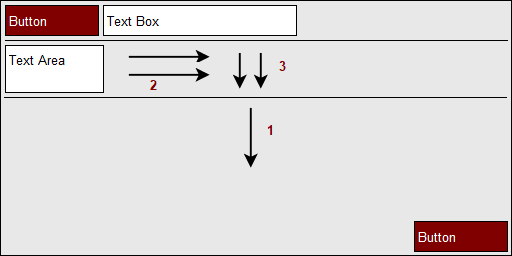
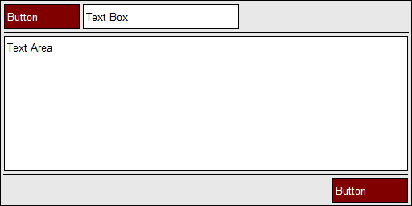
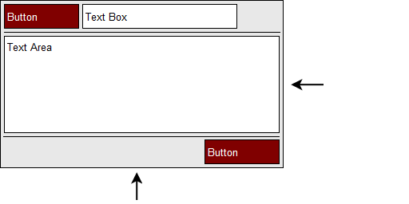

The Flow Layout System
Iffe implements a unique layout system called Flow which works in a
largely different manner to existing systems you may have encountered
so far. However it is intended to simplify the UI development process
and provide a much smoother workflow for both initial development as
well as future maintenance. For now, lets have a look at how it works
and what kinds of functionality it provides.
The first step is to create a minimal program displaying a single window
with a button. This can be done using the following code:
#include <iffe/iffe.h>
widget(MainWindow, Init)
{
int dummy; /* We have no members yet! */
};
void OnInit(struct InitEvent *ev)
{
ref(Widget) button = WidgetAdd(ev->sender, Button);
}
$ cc -oflow main.c -liffe -lX11
Our next step is to move the button to the top left. Rather than set
absolute coordinates (such as 0, 0), Flow works using instructions. So
as the window is resized, these same instructions get rerun and the
window layout is regenerated (albeit at a different size). For now we
just move up via the following code:
As you may have guessed, directions are given within the WidgetFlow
function via < > ^ v symbols. As the following image demonstrates,
the button will keep moving upwards until it hits either the edge of
the window or another positioned Widget.
With that in place, we can then instruct the Widget to move to the
left. Rather than writing multiple statements in C, the command can be
collapsed as seen in the following code:
WidgetFlow(button, "^<");
ref(Widget) text = WidgetAdd(ev->sender, TextBox);
WidgetFlow(text, "^<");
ref(Widget) sep = WidgetAdd(ev->sender, Separator);
WidgetFlow(text, "=<^");
#include <iffe/iffe.h>
widget(MainWindow, Init)
{
int dummy;
};
void OnInit(struct InitEvent *ev)
{
ref(Widget) button = WidgetAdd(ev->sender, Button);
WidgetFlow(button, "^<");
ref(Widget) text = WidgetAdd(ev->sender, TextBox);
WidgetFlow(text, "^<");
ref(Widget) sep = WidgetAdd(ev->sender, Separator);
WidgetFlow(text, "=<^");
}
Advanced Ordering
Next in this tutorial we will look further into the ways that ordering
of the flow instructions can affect the layout and also provide useful
results. We will add two new Widgets; a Text Area and another Separator.
Ultimately we want all the remaining space to be taken up by the Text
Area but for now we will only move it into the top left and not expand
it just yet. As for the separator, we will use this to section off
some button widgets but for now lets expand it horizontally and move it
upwards. These tasks can be seen in the following code and subsequent image:
ref(Widget) area = WidgetAdd(ev->sender, TextArea);
WidgetFlow(area, "<^");
ref(Widget) sep2 = WidgetAdd(ev->sender, Separator);
WidgetFlow(sep2, "=<^");
ref(Widget) button2 = WidgetAdd(ev->sender, Button);
WidgetFlow(sep2, "v");
WidgetFlow(area, "=>=v");

As you may have noticed, the WidgetFlow instructions can be specified
multiple times and not only will they append to the current list but
they will also be in sequence of any instructions on sibling Widgets. The
final output can be seen in the following.

Importantly, all of the Widgets are placed using instructions rather than
absolute coordinates which means if we later resize the top-level window,
these instructions are repeated and the UI layout effectively scales. For
example the layout we have created should scale as shown:

Finally a complete listing of the code required to create a program that
provides this layout. This should be considerably simpler when compared
with other UI systems.
#include <iffe/iffe.h>
widget(MainWindow, Init)
{
int dummy;
};
void OnInit(struct InitEvent *ev)
{
ref(Widget) button = WidgetAdd(ev->sender, Button);
WidgetFlow(button, "^<");
ref(Widget) text = WidgetAdd(ev->sender, TextBox);
WidgetFlow(text, "^<");
ref(Widget) sep = WidgetAdd(ev->sender, Separator);
WidgetFlow(text, "=<^");
ref(Widget) area = WidgetAdd(ev->sender, TextArea);
WidgetFlow(area, "<^");
ref(Widget) sep2 = WidgetAdd(ev->sender, Separator);
WidgetFlow(sep2, "=<^");
ref(Widget) button2 = WidgetAdd(ev->sender, Button);
WidgetFlow(sep2, "v");
WidgetFlow(area, "=>=v");
}